Взгляд
ребёнка
Век детского взгляда
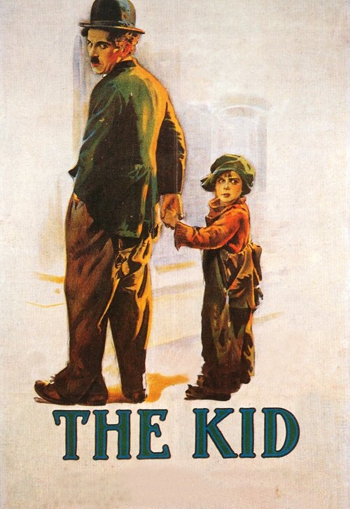
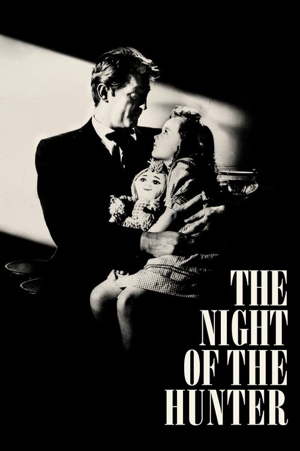
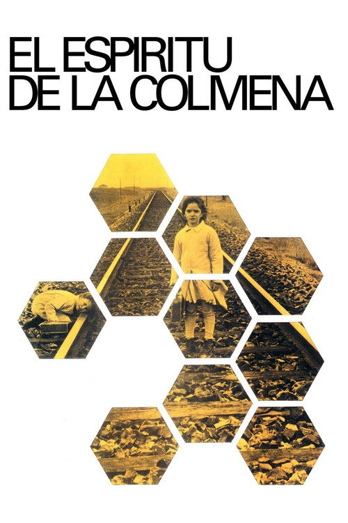
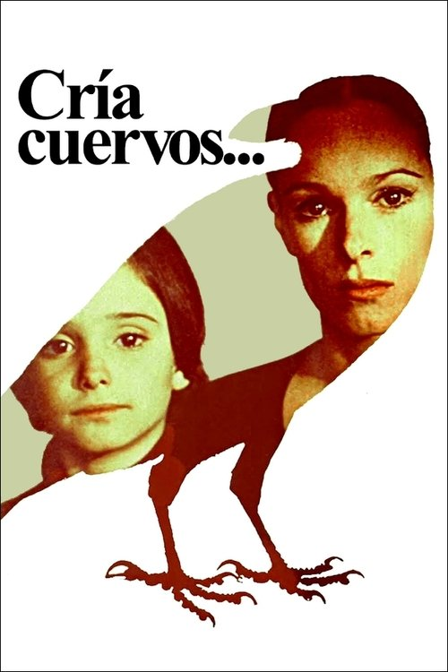
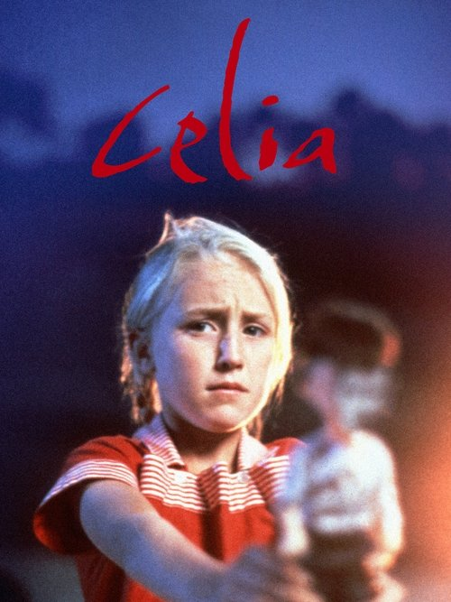
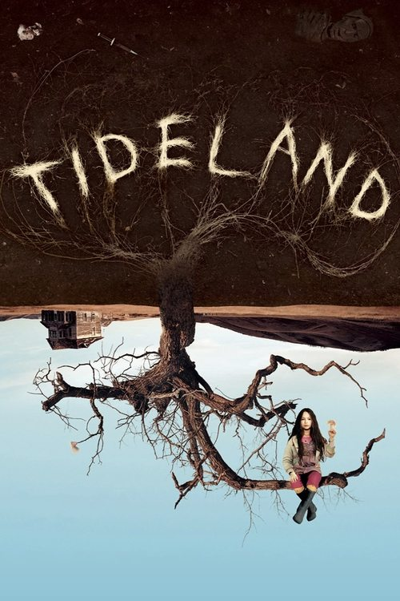
Три готовые роли экранного ребёнка
Талисман. Невинность как украшение сюжета: ребёнок умиляет и ничего не видит.
Жертва. Объект спасения: ребёнку смотрят вслед, самому ему смотреть не дают.
Зловещее дитя. Хоррор-перевёртыш той же монеты: невинность, за которой прячется угроза.
Общее у трёх ролей: взгляд принадлежит взрослому. Лекция разбирает фильмы, где направление меняется — смотрит ребёнок, а взрослый мир становится объектом.
Короткая история передачи камеры
Ребёнок-исследователь
«Маленький Ганс» (1909) открывает: детский страх — работа мысли. Пятилетний мальчик строит теории о рождении, теле и лошадях; фобия оказывается исследованием мира подручными средствами.
Случай «Человека-волка» (1918) добавляет фигуру первичной сцены: ребёнок видит непонятное — и достраивает увиденное фантазией. Само зрелище травмирует не в момент взгляда, а задним числом, когда приходит понимание.
Взгляд, который достраивает
Детский взгляд активен: где взрослый видит факт, ребёнок производит теорию. Кино четырёх кейсов снимает именно это производство.
Игра говорит вместо слов
Игра = ассоциация
Мелани Кляйн переносит анализ на детей: там, где взрослый говорит с кушетки, ребёнок раскладывает игрушки. Сюжет игры читается как сновидение — со сгущениями и смещениями.
Мир из доброго и страшного
Детская психика делит объекты на идеальные и ужасные раньше, чем научается их совмещать. Отсюда чудовища: хобьях и Франкенштейн — законные жители расщеплённого мира.
Для разбора фильмов это ключ: детские ритуалы на экране — куклы Селии, «яд» Аны, головы кукол Джелизы-Роуз — не причуды, а высказывания на языке игры.
Переходное пространство
Винникотт описывает зону между «я» и миром: переходный объект — одеяло, мишка, кукла — принадлежит обоим сразу. В этой промежуточной области живёт игра, а позже — искусство и вся культура.
Кролик Мергатройд, головы кукол, воображаемый Франкенштейн — переходные объекты в чистом виде: с ними ребёнок репетирует утрату, любовь и страх, не подвергаясь им целиком.
Кино как переходный объект
Тёмный зал и экран работают той же промежуточной зоной: не совсем реальность, не совсем фантазия. Ребёнок у экрана — модель любого зрителя.
Поле: ребёнок и экран
Первый зритель
«Childhood and Cinema»: кино с рождения одержимо детским лицом — от люмьеровского завтрака младенца; ребёнок в кадре всегда двойник зрителя в зале.
Слёзы, страхи, сказки
«The Child in Film»: экранное детство работает через жанры чувств; сказка — не украшение, а способ ребёнка думать о насилии и истории.
Исчезающие дети
«Cinema’s Missing Children»: утрата и поиск ребёнка как сквозной сюжет европейского кино — взрослая вина, снятая детскими глазами.
Общий вывод поля: детский взгляд в кино — не биографическая деталь, а оптическое устройство, через которое культура смотрит на собственное вытесненное.
Двойная экспозиция взгляда
Что видит и как достраивает герой: его теории, ритуалы, чудовища — внутренняя логика без скидок на возраст.
Что видит зритель поверх детской головы: история, политика, насилие — всё, что ребёнку не названо.
Расстояние между двумя кадрами: где детская теория точнее взрослой правды, а где — трагически мимо.
Не съехал ли фильм в талисман, жертву или зловещее дитя: сохраняет ли ребёнок положение субъекта до конца.
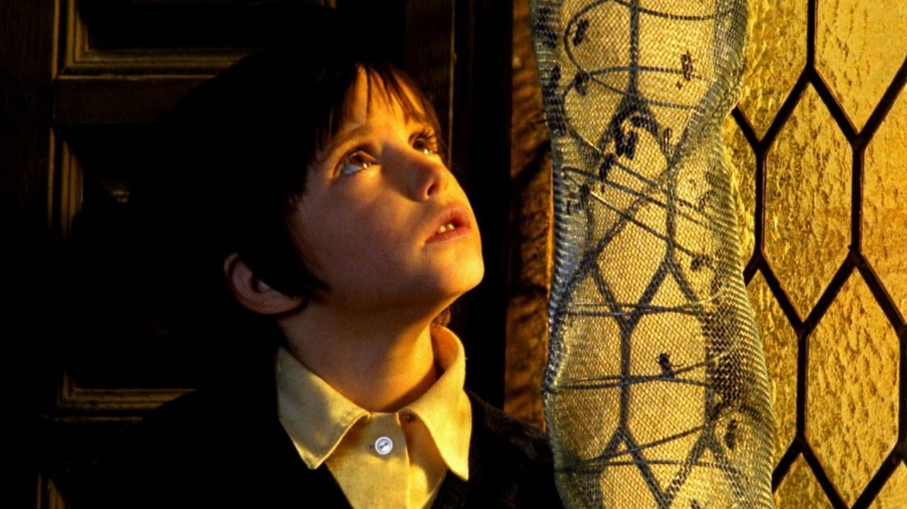
Дух улья
В деревню на плато привозят передвижное кино; шестилетняя Ана смотрит «Франкенштейна» и задаёт вопрос, на который взрослая Испания ответить не может.
Тишина как способ говорить
Испания, поздний франкизм: сценарий Эрисе и Анхеля Фернандеса Сантоса устроен эллипсисами — война, репрессии и беглец в овчарне даны намёками, которые цензура прочесть не смогла, а зал прочёл.
Продюсер Элиас Керехета собирает фильм на шестилетней Ане Торрент: её немигающий взгляд становится главным событием картины. Сан-Себастьян-1973 отдаёт тихому дебюту «Золотую раковину».
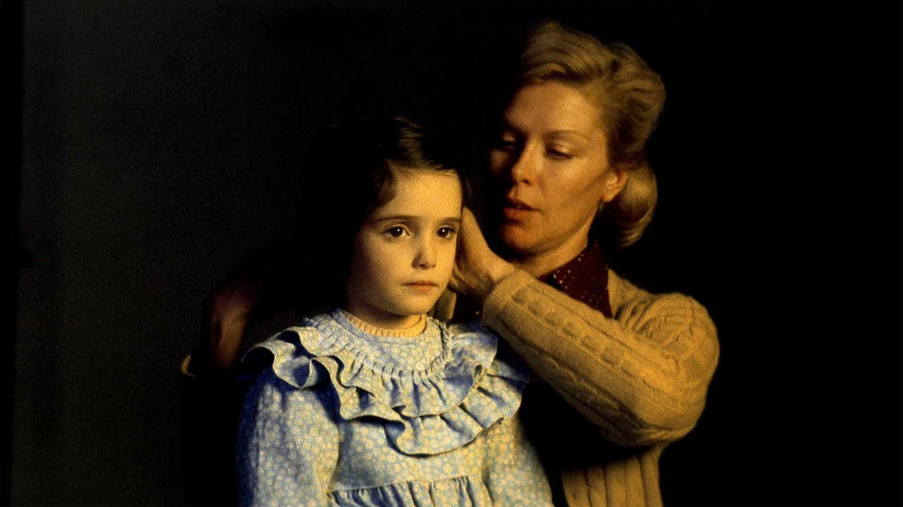
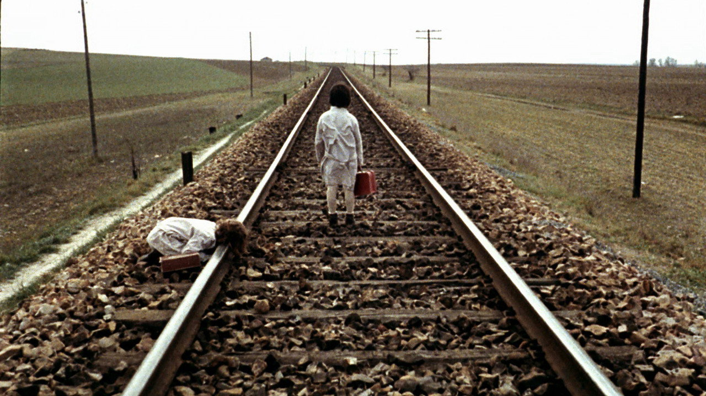
«Почему он её убил?»
Дети смотрят «Франкенштейна» Уэйла; чудовище и девочка у реки. Ана поворачивается к сестре: почему он её убил и почему убили его? Сестра отвечает единственным доступным способом: «Это дух». Вопрос остаётся открытым на весь фильм.
Дом-улей, семья-молчание
Окна дома забраны сотовыми переплётами: медовый свет заливает комнаты, где каждый живёт отдельно — отец с пчёлами и дневником, мать с письмами неназванному адресату, девочки с тайной. Ана переносит киновопрос в жизнь: находит в овчарне раненого беглеца, кормит его, а после ночных выстрелов встречает чудовище у воды — и не отшатывается.
Взгляд-вопрос
Фильм не отвечает Ане и не поправляет её. Финальное «Soy Ana» у окна — присяга собственному взгляду.
Вопрос сильнее ответа
«Дух улья» строит фильм вокруг детского вопроса и отказывается закрывать его взрослым знанием.
Зазор истории
Ана спрашивает про чудовище; зал видит послевоенную Испанию. Зазор между кадрами и есть высказывание, которое цензура не смогла вменить.
Взгляд-вопрос
Первый ответ лекции: ребёнок видит в чудовищном не угрозу, а загадку — и удерживает её дольше, чем позволяет себе взрослый.
Как читали «Дух улья»
«Золотая раковина» тишайшему фильму конкурса: жюри награждает картину, которая почти ничего не произносит вслух.
Авторская позиция: эллипсис как выбор, а не вынужденность; фильм о том, как рождается взгляд, — политика входит через форму, не через реплики.
«Blood Cinema»: «дети Франко» — детский взгляд испанского кино как шифр национальной травмы, разрешённый способ смотреть на запрещённое.
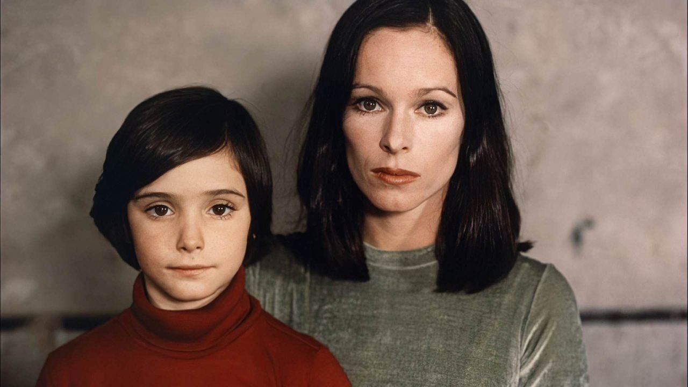
Выкорми ворона
Восьмилетняя Ана уверена, что убила отца ложкой «яда», и предлагает смерть бабушке как услугу. Дом-склеп в центре Мадрида; за стеной шумит город, которому скоро жить без Франко.
Роль, написанная под взгляд
Саура пишет сценарий под Ану Торрент, увидев её в «Духе улья»; продюсирует снова Керехета — испанская пара лекции связана дважды. Съёмки идут, пока Франко умирает: смерть отца-военного из Голубой дивизии читается залом мгновенно.
Канны-1976 дают фильму Гран-при жюри; песенка «Porque te vas» из проигрывателя Аны становится общеевропейским хитом — траурный фильм расходится по радиоприёмникам.
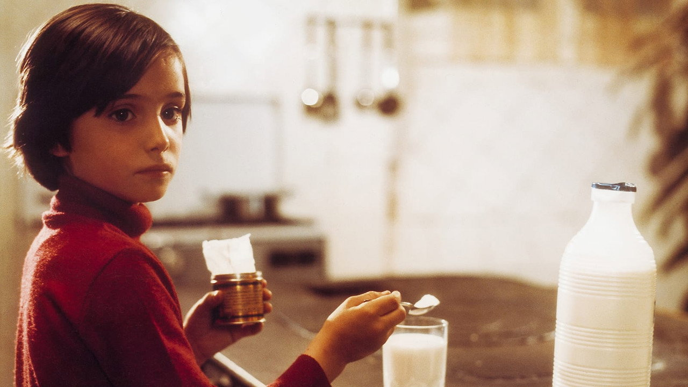
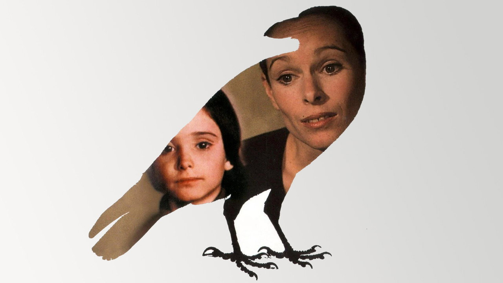
Прятки, в которых умирают
Сёстры играют в прятки, где найденный «умирает» и воскресает по команде; Ана хранит банку соды, веря, что ложка этого «яда» убивает слона. Смерть в детском кадре — обратимая операция, которой можно управлять.
Времена без швов
Камера Сауры не различает настоящее, память и фантазию: мёртвая мать заходит в кадр без наплыва, взрослая Ана говорит в объектив лицом Джеральдин Чаплин — тем же, что у матери. Монтаж воспроизводит устройство детской психики, где желание и факт равноправны: Ана «убивает» отца содой, и фильм ни разу не опровергает её версию событий.
Скорбь как всемогущество
Не в силах вернуть мать, Ана присваивает власть над смертью. Кино отдаёт ей монтаж — главный инструмент этой власти.
Власть понарошку, горе всерьёз
«Выкорми ворона» отдаёт ребёнку не только взгляд, но и монтаж: мир собран по законам её скорби.
Зазор поколений
Ана хоронит мать; страна хоронит диктатора. Взрослая Ана из будущего свидетельствует: детская тьма была настоящей — «рая детства» не существовало.
Всемогущество скорби
Второй ответ лекции: детский взгляд превращает утрату во власть над смертью — игрушечную по средствам и подлинную по ставкам.
Как читали «Ворона»
Гран-при жюри: Европа читает фильм политически — детская скорбь как некролог франкизму, снятый ещё при жизни адресата.
«Никогда не верил в так называемый рай детства»: ночной ужас, одиночество и немота — законная часть детства, а не его искажение.
«Blood Cinema»: вместе с «Ульем» — вершина «детей Франко»; поколение, для которого история пришла в дом смертью родителей.
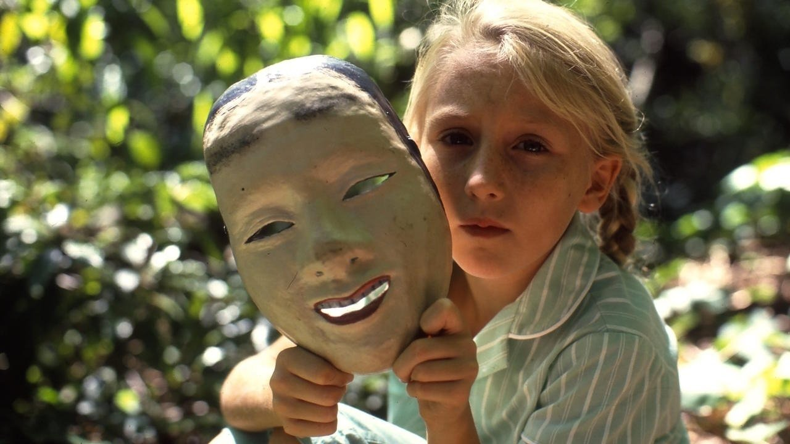
Селия
Девятилетняя Селия находит бабушку мёртвой, дружит с детьми коммунистов и получает кролика Мергатройда. Государство отнимает всё по очереди — и сказочные чудовища из хрестоматии выходят на улицы предместья.
Красные и кролики
Дебют Энн Тёрнер сталкивает две кампании реальной Австралии пятидесятых: охоту на коммунистов и войну с кроличьей чумой, когда премьер Виктории Болт распорядился изъять даже домашних кроликов. Соседей-коммунистов выдавливают из района; Мергатройда увозит в зоопарк дядя-полицейский.
Бабушка Селии, к слову, была левой — отец после её смерти жжёт её книги. Гран-при женского кинофестиваля в Кретее; в американском видеопрокате картину переименуют в «Celia: Child of Terror» и продадут как хоррор.
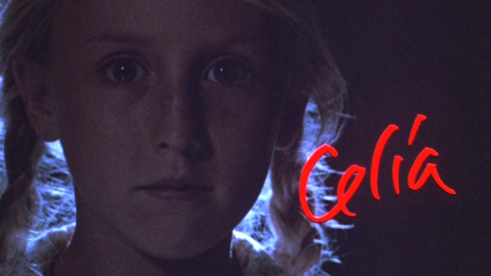
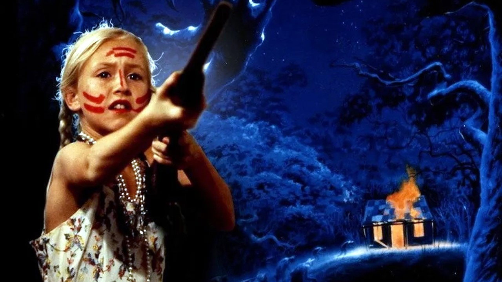
Хобьяхи приходят ночью
В школе читают сказку о хобьяхах — тварях, что по ночам уносят близких. В ту же ночь синяя лапа скребётся в окно Селии. Дальше хобьяхи проступают сквозь лица взрослых: на газетном портрете премьера, на лице дяди-сержанта.
Сказка как оптика гнева
Тёрнер не отделяет фантазию от факта: хобьяхи сняты той же камерой, что барбекю и школьные линейки. В карьере дети проводят ритуалы — куклы-чучела обидчиков, булавки, костёр: язык игры по Кляйн, дословно. Когда кролик погибает в загоне зоопарка, а виновным детская логика назначает дядю, сказочная оптика доводит силлогизм до конца: Селия видит хобьяха и стреляет из отцовского ружья.
Фантазия-оружие
Мать прячет улики; после дети играют «в казнь». Фильм не наказывает Селию и не оправдывает — он показывает механизм.
Ребёнок доводит взрослых до логического конца
«Селия» переворачивает моральную схему: чудовищна не детская фантазия, а взрослый мир, который она честно отражает.
Зазор паник
Селия видит хобьяхов; зал видит маккартизм по-австралийски. Расчеловечить «красных» и «вредителей» придумали взрослые — девочка лишь применила метод к обидчику.
Фантазия-оружие
Третий ответ лекции: воображение защищает ребёнка, пока не остаётся ничего, кроме него, — тогда оно стреляет.
Как читали «Селию»
New York Times: сила Смарт и медленно нарастающее напряжение против «последней трети, которая заходит слишком далеко» — финал раскалывает критику.
Trylon Video переименовывает картину в «Child of Terror» и продаёт как хоррор о зловещем дитя — точная иллюстрация трёх готовых ролей из акта I.
Авторское чтение: хобьяхи — страх «красных под кроватью»; политическая аллегория, которую новые зрители всё чаще смотрят как чистый хоррор — и это её завораживает.
Критики ставят фильм в ряд великих дебютов о детстве — рядом с «400 ударами»; реставрации возвращают «Селию» из ниши видеопроката в канон.
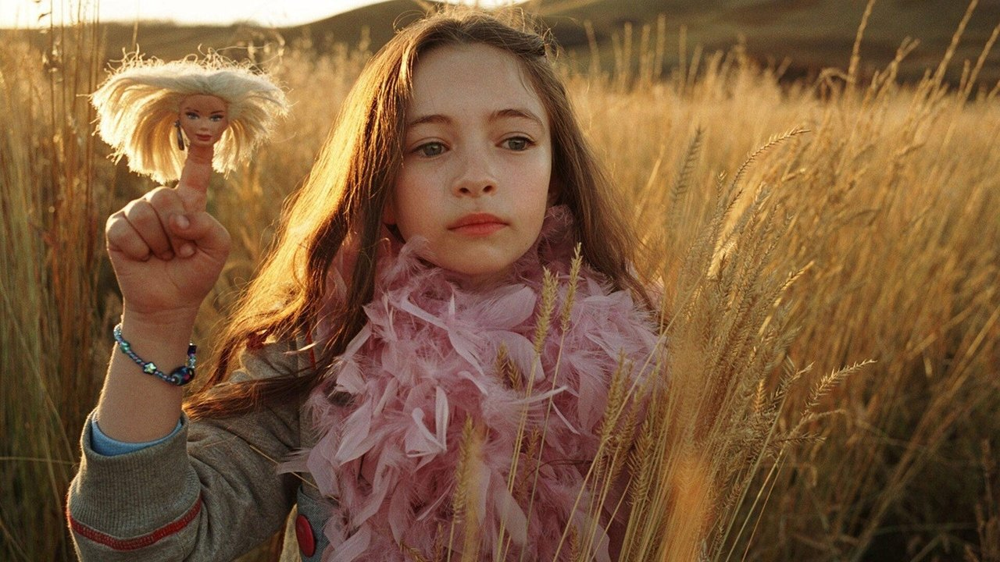
Страна приливов
Джелиза-Роуз остаётся одна на заброшенной ферме среди пшеницы: родители-наркоманы мертвы, собеседники — четыре головы кукол. Воображение делает из катастрофы страну приливов.
Снято в бегах от студии
Гиллиам снимает «Страну приливов» в полугодовом перерыве монтажных войн с Вайнштейнами за «Братьев Гримм» — быстро, дёшево и без оглядки на прокат. Прокат отвечает взаимностью: меньше ста тысяч долларов сборов в США, уходы из зала на сцене, где девочка готовит отцу шприц.
К релизу режиссёр приклеивает снятый дисклеймер: «Многие из вас этот фильм не полюбят... Он увиден глазами ребёнка. Если он шокирует — то потому, что он невинен».
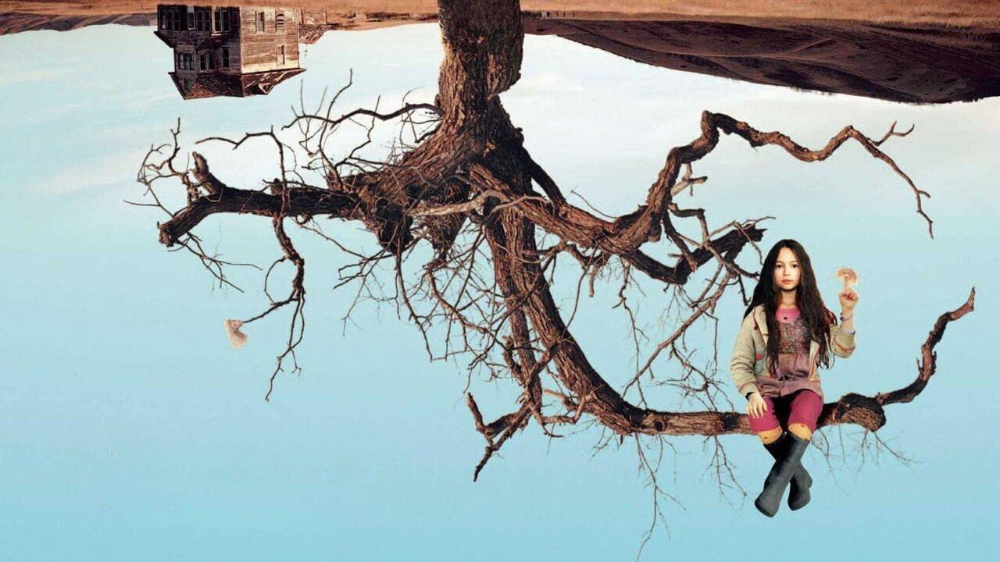
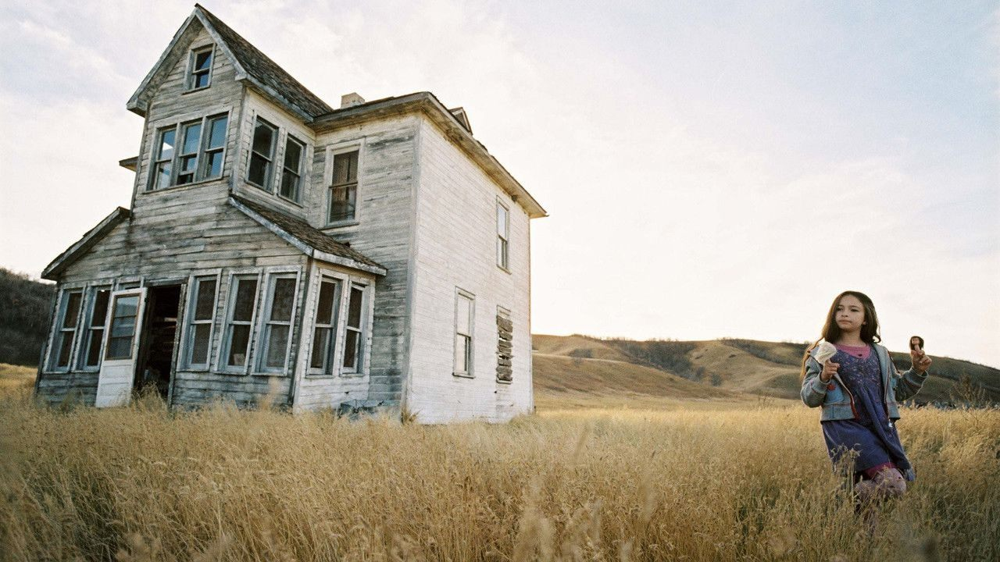
Шприц перед сном
Джелиза-Роуз буднично разогревает ложку и готовит отцу укол: в её словаре это «каникулы». Когда Ной не просыпается, каникулы просто становятся длиннее. Ни музыка, ни камера не подсказывают залу, что думать.
Ни кадра поверх её головы
Сам Гиллиам описывал фильм как скрещение «Алисы в Стране чудес» с «Психо». Пшеница снята как океан над головой маленькой героини — отсюда «приливы»; ферма позирует под «Мир Кристины» Уайета. Кроличья нора здесь полна падающих шприцев, собеседники — головы кукол с разными голосами, а таксидермия соседки превращает мёртвого отца в вечного спящего. Взрослой рамки, которая расставила бы оценки, в фильме нет ни секунды.
Фантазия-убежище
Воображение не украшает ужас — оно его перерабатывает, как прибой. Цена: зритель заперт внутри без переводчика.
Невинность как фильтр ужаса
«Страна приливов» доводит метод лекции до предела: детский взгляд без взрослой рамки — и без гарантии, что зритель выдержит.
Зал требует рамку
Уходы и разгромы показали: зрителю нужна взрослая инстанция, которая осудит происходящее. Фильм отказывает — и это оскорбляет сильнее любого шока.
Убежище
Четвёртый ответ лекции: фантазия — способ выжить там, где взрослые уже не справились. Радикальная верность ребёнку читается как провокация.
Как читали «Страну приливов»
Разгром: Роупер признаётся, что едва не вышел из зала; New York Post сравнивает персонажей с бактериями. Фильм объявлен непристойной ошибкой.
Дисклеймер как манифест: фильм увиден глазами ребёнка, и если он шокирует — то невинностью; взрослые страхи предлагается оставить у входа.
Контрголос коллеги: «поэтический фильм ужасов» — редкая защита, прочитавшая жанр картины точнее рецензентов.
Культовый статус: защитники настаивают, что ни одна шокирующая сцена не снята эксплуатационно — шок производит последовательность взгляда, а не материал.
Ребёнок видит вытесненное
Вопрос
Ана у Эрисе смотрит на чудовище и спрашивает — там, где взрослая Испания молчит.
Всемогущество
Ана у Сауры присваивает власть над смертью: скорбь становится монтажом фильма.
Оружие
Селия применяет взрослую логику паник к собственному обидчику — и сказка стреляет.
Убежище
Джелиза-Роуз перерабатывает катастрофу воображением — единственным доступным инструментом.
Общий знаменатель: во всех четырёх фильмах детский взгляд направлен на то, что взрослый мир вытеснил, — войну, диктатуру, панику, зависимость. Зазор двойной экспозиции превращает частную историю в диагноз эпохе.
Сила и предел
Оптика вытесненного
Детский взгляд легально показывает то, что при прямом показе вызвало бы цензуру или клише: франкизм через Франкенштейна, маккартизм через хобьяхов. Двойная экспозиция дисциплинирует чтение — фильм не сводится ни к сказке, ни к политике.
Ребёнок как носильщик
Метод рискует инструментализацией: взрослые смыслы грузятся на детские плечи, и «субъект взгляда» незаметно становится аллегорией. Второй риск — умиление: рынок стремится вернуть ребёнка в роль талисмана, что показала судьба «Селии» в видеопрокате.
Проверка на современности
Мир размером с сарай, рассказанный пятилетним: переходное пространство Винникотта как сюжетный каркас.
Нищета мотельной Америки в цветах мороженого: двойная экспозиция дословно — праздник в кадре ребёнка, катастрофа в кадре взрослого.
Воображаемый друг-Гитлер: наследник хобьяхов Селии — детская фантазия, впитавшая взрослую пропаганду.
Смотреть детский фильм в обе экспозиции — базовая гигиена: что видит герой, что видит зал и кому принадлежит финальный взгляд.
Карта курса
К семинару
Двойная экспозиция
Одна сцена из любого кейса: 300–400 слов — кадр ребёнка, кадр взрослого и зазор между ними. Финальный абзац: удержал ли фильм ребёнка в положении субъекта.
Две Аны или два предела
«Торрент 1973 и 1976: один взгляд, две работы скорби» — либо «Селия против Джелизы-Роуз: фантазия-оружие и фантазия-убежище».
«Синий бархат»
Посмотреть к Лекции 11 «Экран смотрит в ответ»: Линч, ухо в траве и взгляд, который смотрит в ответ.